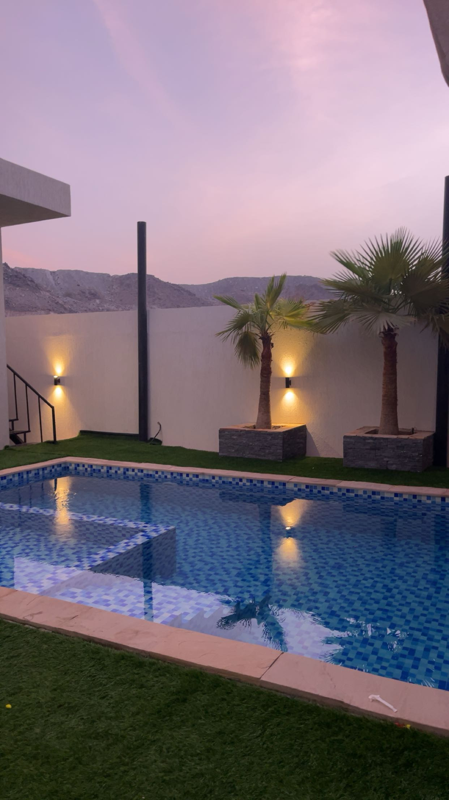

Amal Ahmed Mohamed
UX-EngineerLär känna mig
Hej, jag heter Amal. Jag är en 19 åring driven av stark nyfikenhet och vilja att lära mig nya saker hela tiden. Att ständigt utvecklas är något jag gillar att göra. Just nu är mina två huvud intressen ekonomi och datavetenskap. Jag är född och uppvuxen i Sverige med en mångkulturell bakgrund då mina föräldrar kommer från Somalia och Marocko. Att växa upp med två olika kulturer har gett mig en stor passion för att resa och upptäcka nya platser i världen. Hittills har jag besökt länder som Kanada, Marocko, Förenade Arabemiraterna, Oman och Finland. Mina framtida drömdestinationer inkluderar Bali (Indonesien), Maldiverna, Cancun (Mexiko), Spanien, Frankrike och Monaco. På fritiden gillar jag att umgås med mina vänner då vi har väldigt lika intressen och alla satsar på att bygga något stort för sig själva.



Färdigiheter
- Gymnasiearbete: Bioplast av restprodukter från köket - en studie för minskat avfall.
Inriktning: Bioteknik, cirkulär ekonomi och hållbar produktutveckling. - Affärutveckling: WorkIT Company.
Inriktning: Entreprenörskap & Företagsekonomi.
Beskrivning: Ett café med arbetsutrymme där kunder kan hyra ljudisolerade rum för att arbeta, nätverka eller studera i en ostörd miljö. För att ge maximal bekvämlighet erbjuder vi premiumrum där beställningar levereras via rullband direkt till rummet, så att du kan fokusera fullt ut på ditt arbete.
För en närmare inblick i mina arbeten finns de fullständiga rapporter tillgängliga här: